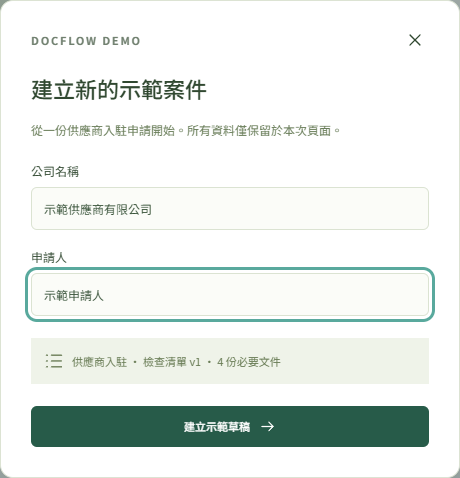
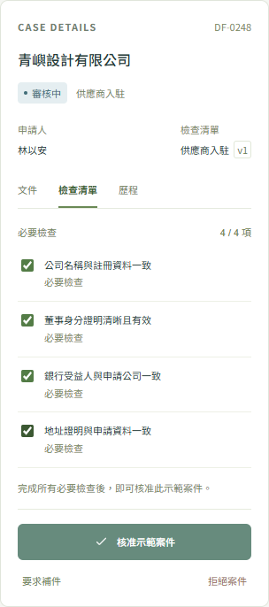
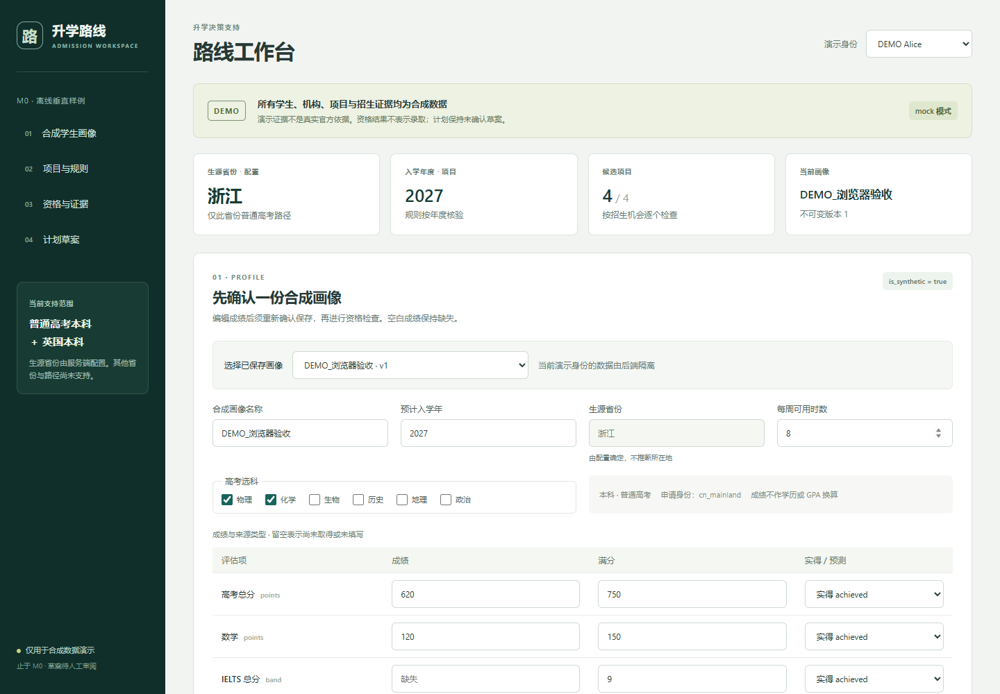
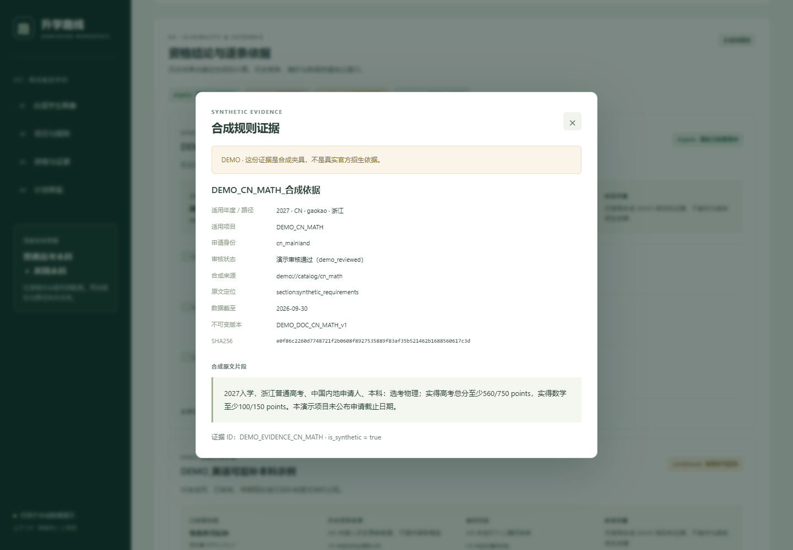

PROJECT 01開發項目
DocFlow
文件提交與人工審核工作流程，結合不可變更的需求版本、私有上傳及可追溯的決策記錄。
PythonReactTypeScriptAWSTerraform
閱讀項目詳情
香港 Python · TypeScript · Cloud
我開發 Web 應用與後端工作流程，讓複雜的任務更容易理解和執行。從釐清需求、設計介面到保留決策依據，我重視實用與可追溯的實作。
從產品需求，到具體的功能實作。
文件提交與人工審核工作流程，結合不可變更的需求版本、私有上傳及可追溯的決策記錄。
以證據為基礎的諮詢流程：學生畫像、項目選擇、確定性資格檢查及行動計劃草案。
01 / 文件工作流程
以 AWS Serverless 實作的文件工作流程項目，支援建立需求、記錄提交及人工審核，並保留每個決策背後的版本與操作歷史。
前端示範使用合成資料及記憶體狀態，與後端分開。
歷史上已完成五條有限範圍的 AWS 後端流程。其他雲端驗收尚未完成；雲端資源現已退役。
這是開發案例，目前沒有線上服務，也不宣稱已達正式生產環境要求。


2026 年 9 月示範截圖：人名、機構與案件編號全部虛構。介面使用記憶體狀態，未接真實認證或上傳 API，也不是線上雲端應用。項目源碼為私有，可按需要安排程式碼講解。
02 / 有證據依據的諮詢
採用模組化單體架構，把學生資料、明確要求與來源證據串連起來，並清楚保留資料不足時的未知狀態。
合成 M0 核心流程已在本機走通。其他任務的源碼完成，不代表運行驗收已全部完成。
年度更新只產生待採集與待審核請求，預設關閉。真實模型調用與公眾服務仍未啟用。
不估算錄取機率、不自動提交申請，也不編造缺失的學校資料。


截圖來自 2026-10-13 本機合成 M0 演示。圖中學生、機構、成績與規則全部為 DEMO 夾具，不是官方招生依據或真實錄取結論。這是舊版介面，不展示或驗證新增學校／專業搜尋。項目尚非公眾服務，也不代表已有全國資料覆蓋。源碼為私有，可按需要安排程式碼講解。
以上項目中實際使用的工具。
TypeScript、React、Vue 3、Vite。明確的使用者操作、資料缺口提示與工作流程狀態。
Python、FastAPI、Pydantic、PostgreSQL、API 契約。資料驗證、權限及可追溯記錄。
AWS Serverless、Terraform、Git。基礎設施定義、非同步作業及交付範圍記錄。
軟件工程基礎與面向客戶的工作經驗。
軟件工程 · 碩士
計算機科學與技術 · 學士
流動應用前端開發經驗。
客戶服務 · 香港。理解需求、清楚溝通及跟進問題。
AWS Certified Solutions Architect – Associate
AWS Certified Cloud Practitioner
按個人履歷所列的 2026 年認證資料。
軟件工程基礎，以及把問題轉化為清楚行動步驟的溝通經驗。我希望投身軟件開發或 IT 工作，參與實際系統的開發、問題處理與持續改善。